Managing journal titles¶

Creating a new record¶
Select File-> Open-> Journals-> New.
Write the title of the journal and click on Open button.
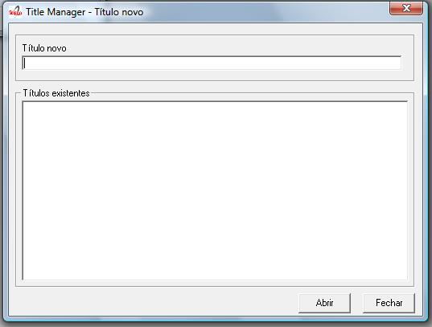Register the journal data. Read Journal form.
Click on Save button
Opening a record to edit the journal data¶
Select File-> Open-> Journals-> Open
Select the title you want to open
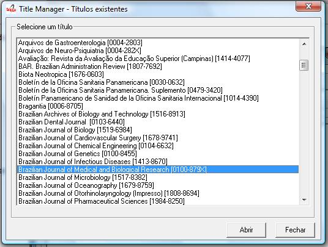Register the journal data. Read Journal form.
Click on Save button
Deleting records of journals and their issues¶
It is used to remove records of one or more titles.
Use it ‘’‘only’‘’ if you are sure the journal ‘’‘HAS NEVER BEEN PUBLISHED’‘’.
‘’‘IT Is MANDATORY’‘’ to keep all the titles registered, although ceased or removed off the collection, they must keep published.
If your intention is disable the journal, read Journal history.
It deletes the records of the databases title and issue locally. So, only after GeraPadrao, the title will be deleted from the website.
Select File-> Open-> Journals-> Delete
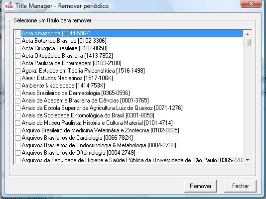Select the titles to be removed.
Click on Remove button.
Journal form¶
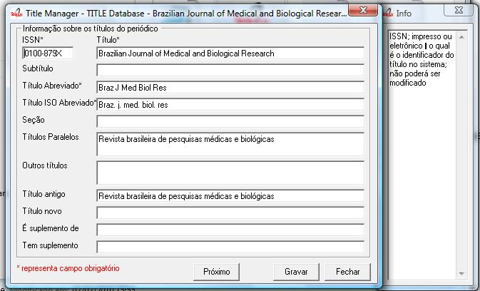ISSN¶
Field: 400
ISSN – print or electronic – which can not be changed because it is used as a key
Publication Title
.
Field: 100
Main title or title proper of the serial, in the language and form in which it appears.
Examples:
- Publication title: British journal of surgery
- Publication title: Journal of pediatrics
- Publication title: Pediatrics (London)
- Publication title: Pediatrics (New York)
- Publication title: Abboterapia (English ed.)
- Publication title: Abboterapia (Spanish ed.)
Subtitle¶
Field: 110
Any information subordinate to the title proper which completes it, qualifies it or makes it more explicit. Enter in this field only the information defined as subtitle, with the intent that this information will be useful for the correct identification of the title. Enter other variant forms of the title (extended title, cover title, etc.) in specific fields accordingly. Example:
- Publication Title: MMWR Subtitle: morbidity and mortality weekly report
Short Title¶
Field: 150
Enter the abbreviated title respecting the upper case letters, lower case letters and accentuation of the corresponding language, according to the standard.adopted by the journal
ISO Short Title¶
Field: 151
Enter the abbreviated title respecting the upper case letters, lower case letters and accentuation of the corresponding language, according to ISO standard 4-1984 and List of serial title word abbreviations. This field is mandatory for titles indexed in LILACS and/or MEDLINE. Examples:
- Publication title: West Indian medical journal Abbreviated title: West Indian med. j.
- Publication title: Abboterapia (English ed.) Abbreviated title: Abboterapia (Eng. ed.)
- Publication title: Pediatrics (London) Abbreviated title: Pediatrics (London)
Section¶
Field: 130
Enter in this field the name of the Section, Part or Supplement, if exists, as it appears on the title page or its substitute, recording the first letter of the first word in upper case.
Examples:
- Publication Title: Acta ophtalmologica Title Section/Part: Supplement
- Publication Title: Bulletin signaletique Section/Part: Section 330 Title Section/Part: Sciences pharmacologiques
Parallel Titles¶
Field: 230
Enter parallel titles in accordance with the sequence and typography in which they appear on the title page or its substitute, according to ISBD(S) rules.
In case of more than one parallel title, enter them in the sequence which appears on the title page, separated by ENTER (one by lin
- . Examples:
- Publication Title: Archives of toxicology Parallel Title: Archiv fur Toxikologie
- Publication Title: Arzneimittel Forschung Parallel Title: Drug research
Other Titles
.
Field: 240
Other forms of the title which appear in the serial such as: cover title which differs from the title on the title page, full title and other variant forms of the title. Include here lesser variants of the title proper which do not require a new record, but which justify their retrieval. In case of more than one title form, enter them in the sequence in which they appear, separated by ENTER (one by lin
Examples:
Publication Title: Obstetrics and Gynecology Clinics
of North America Other Forms of Title: Obstetrics and Gynecology
Clinics
Publication Title: Journal of the National
Cancer Institute Other Forms of Title: JNCI: Journal of the National
Cancer Institute
Old Title
... Field: 610
Enter the preceding title, if there is one. If this title exists in the collection, in the journal homepage is presented a link from the current title to the preceding and vice-versa.
New Title
... Field: 710
Enter the subsequent title of the serial. If this title belongs to the collection, in the site there will be a link between the title and its subsequent title, and vice versa.
Is Supplement
... Field: 560
Link note: Note which acts as a link between the title of the supplement/insert and the main title or title proper. Enter the main title or title proper to which the supplement/insert is linked.
Has Supplement
...¶
Field: 550
Link note: Note which acts as a link between the main title or title proper and its supplements/inserts (titles generally published in separate form, with its own numbering, which complements the main titl
- Enter in this field the title of the supplement/insert.
Registering the subject areas¶
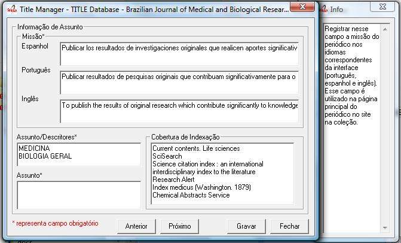Mission¶
Field: 901
Enter in this field the mission of the journal in English, Spanish and Portuguese. This is used in the home page of the journal.
Examples:
- Misión: To publish the results of original research which contribute significantly to knowledge in medical and biological sciences
- Misión: La revista publica contribuciones originales de investigadores de todo el mundo en las áreas de parasitología, microbiología, medicina tropical, así como estudios básicos en bioquímica, inmunología, biología celular y molecular, fisiología, y genética relacionados con esas áreas
Subject/Descriptors
.
Field: 440
Descriptors; Standard terms used for the subject representation of the serial being described. Terms must be entered in capital letters. Cooperating Centers of BIREME System should use terms taken from DeCS (Descriptors in Health Scienc
- . In case of more than one descriptor, enter them in sequence, separating them by ENTER, an item by line. Enter a maximum of 4 descriptors. Examples:
- Descriptors: OCCUPATIONAL MEDICINE
- Descriptors: PEDIATRICS
- Descriptors: NEUROLOGY
PEDIATRICS
- Descriptors: GYNECOLOGY
OBSTETRICS
Study Area¶
Field: 441
Select one or more subjects related to the journal. The site uses this content to presents the journal title in the site in the list by subject.
Indexation Range
.
Field: 450
Indexing Coverage – Enter in this field all the database in which the title is indexed.
Each database in one line.
Examples: IM- Index Medicus
LL- LILACS
IL- Index Medicus Latino Americano
EM- Excerpta Medica
BA- Biological Abstracts
SP- LILACS-SP
Registering formal information¶
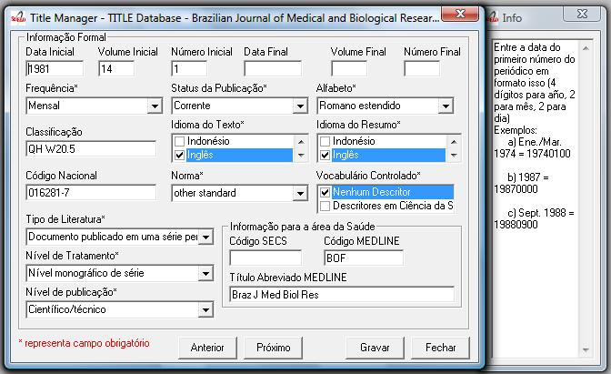Initial Date
... Field: 301
Enter the date of the first issue of the journal in ISO format (year in 4 digits, month 2 digits, day in 2 digits). Examples:
- Initial date: Jan./Mar. 1974 19740100
- Initial date: 1987 19870000
- Initial date: Sept. 1988 19880900
Initial Volume
...¶
Field: 302
Enter the initial volume in arabic numerals. Omit this information for serials which do not include clear information on the volume. Examples:
- Initial volume: 1
- Initial volume: 4
Initial Number¶
Field: 303
Enter the initial number in arabic numerals. Examples:
- Initial number: 1
- Initial number: 2
Terminate Date¶
Field: 304
Date, in ISO format, in which the journal was published for the last time.Examples:
- Termination date: 1984 19840000
- Termination date: 1988 19880000
Final Volume
.
Field: 305
Number of the last published volume of the serial. Enter the final volume in arabic numerals. Examples:
- Final volume: 10
- Final volume: 12
Final Number
.
Field: 306
Enter the final number in arabic numerals. Examples:
- Final number: 7
- Final number: 10
Frequency
... Field: 380
Code which identifies the intervals of time in which the issues of the serial are published.
Publication Status¶
Field: 50
Code which identifies if this title can be or already is published in the collection. In other words, if this title which can be processed by gerapadrao.
Current – title which can be accessed on the web site of the collection
Unknow – title which belongs to the collection, although it is not ready to be published Ceased – title which does not belong to the collection but it is related to title of the collection
Reports only – title which does not belong to the collection but it is used in reports
Alphabet
... Field: 340
Enter data in this field the alphabet of the Original Title of the journal title.
Classification
...¶
Field: 430
Subject classification number assigned to the serial according to the classification system used by the Center.
Text Idiom¶
Field: 350
Languages in which the articles are published, including the translations. This field is related to the presentation of all the full texts of the site.
...¶
Field: 20
Code which identifies the title in the national system of serials of each country (or its equivalent) with the purpose of facilitating the transfer of data between this and other related systems. Enter in this field the code assigned by the institution responsible for the national system of serials of each country (or its equivalent). Examples:
National Code: 001060-X
(Code assigned by the Brazilian National Union List)
National Code: 00043/93
Standard
.
Field: 117
Standard used to the bibliographic references presentation. This content is related to the Markup program.
Controled Vocabulary
.
Field: 85
Enter in this field the controlled vocabulary used to the key words
Type of Literature
...¶
Field: 5
Type of literature
Treatment Level
.
Field: 6
Level of publication
.
Field: 330
SECS Code
...¶
Field: 37
Enter in this field the number assigned by BIREME which identifies the title in SeCS (Health Science Serials) database. Mandatory field for Cooperating Centers which input data to SeCS database. This field is used by the system to generate the holding files which are to be transfered to SeCS database. This field must be entered if SECS is recorded in Field 040; Related Systems. Examples:
- SECS Number: 2
- SECS Number: 4
MEDLINE Code
.
Field: 420
MEDLINE Code (Journal Cod
- of the title when it is indexed in MEDLINE databases.
MEDLINE Short Title
.
Field: 421
Short title for MEDLINE
Registering publisher and sponsor¶
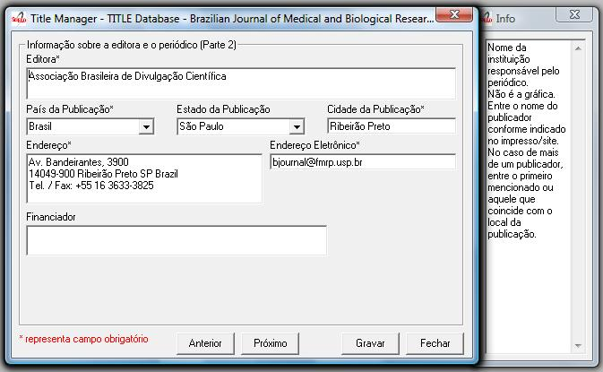Publisher
...¶
Field: 480
Name of the publisher and/or issuing body of the serial. Enter the name of the publisher responsible for the serial as it appears in the publication. When the publisher is the same as the issuing body, it is not necessary to repeat it in this field, except when it is indispensable for purposes of acquisition. In case of more than one publisher, enter the first one that appears on the publication or the one that coincides with the place of publication. Examples:
- Publisher: Pergamon Press
- Publisher: Plenum Press
Publisher’s Country
.
Field: 310
Country of the Publication
Publisher’s State
...¶
Field: 320
State/Province – Enter in this field the location in the country of the publication, but not the city or town.
Examples:
- State/Province: SP
- State/Province: RJ
Publisher’s City
... Field: 490
Enter the name of the city in full in the language in which it appears in the publication. When the title appears in more than one language, enter the city in the language of the title proper. When it is not possible to determine the place of edition and/or publication of the serial, enter the abbreviation s.l. Examples:
- Place of publication: Port of Spain
- Place of publication: London
- Place of publication: s.l
Address
.
Field: 63
Enter in this field the address and phone numbers. This data is presented in the foot page and is used to conctact the publisher.
Examples:
- Rua Capitão Adelmio Norberto da Silva, 736
14025-670 Ribeirão Preto, SP; Brasil
Telephone and Fax: (55 16) 621.8540, 620.1251, 620.1253
- Avenida Lineu Prestes, 2227; Caixa Postal 8216
Cidade Universitária Armando de Salles Oliveira
05508-900 São Paulo, SP; Brasil
Telefone: (55 11) 818.7861
Fax: (55 11) 818.7413
Electronic Address
...¶
Field: 64
Enter in this field the e-mail address of the publication, used in the process of publication. DO NOT USE PERSONAL e-mails. This information is presented in the foot page of the site.
Sponsor
.
Field: 140
Enter the name of the financial sponsors
Registering license or copyright¶
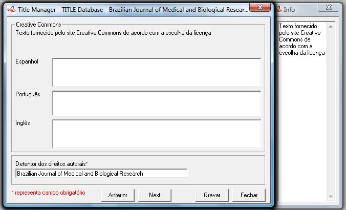Text provided by Creative Commons site according to the license choice
...¶
Field: 540tl
Enter in HTML in English, Portuguese, Spanish, a text, which inform the license to use the content of the journal (Creative Commons).
Copyrighter
.
Field: 62
Copyrighter
Ejemplos:
- Brazilian Journal of Medical and Biological Research
- Sociedade Brasileira de Genética
- Instituto Universitário de Pesquisas do Rio de Janeiro
- Revista Brasileira de Ciências Sociais
Registering the history of journal’s status in the collection #JOURNAL_STATUS_HISTORY¶
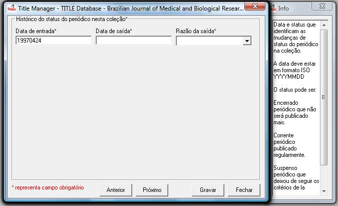Journal’s status history in this collection¶
Field: 51abcd
Date and status which identify the changes of the journal’s status in the collection. Date must be in ISO format YYYYMMDD Status can be:
- Ceased (D): journal will not be published any more.
- Current (C): journal published currently.
- Suspended (S):journal is no longer according to collection´s criteria. In the future it can become current.
Journal’s status history in this collection¶
Field: 51
Repetitive.
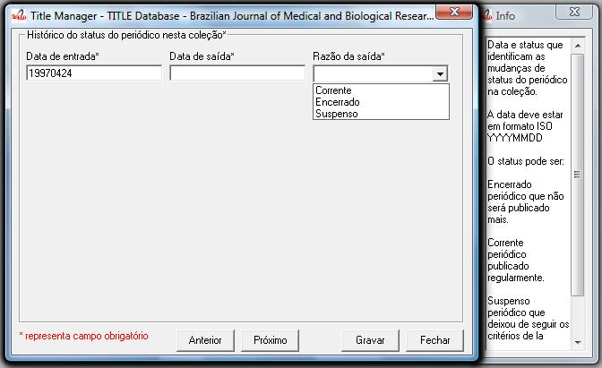
- subfield a: initial date, ISO format
- subfield b: status which value is C
- subfield c: final date, ISO format
- subfield d: status which value is D or S
Registering data for the website¶
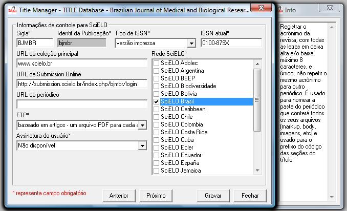Siglum¶
Field: 930
Enter in this field the acronym of the journal, max 8 characters length, in capital letter or not. It must be unique comparing to the other titles. It is used for the name of the folder in which are saved all the files related to the journal (markup, body, images, et
- and also used for the prefix to the sections code of the journal.
Publication Identifier
...¶
Field: 68
Name of the folder which contains the files of the journals and which is in serial folder. It is automatically filled as filling in the field acronym of the title of the journal
ISSN Type
... Field: 35
Identifies the type of the CURRENT ISSN.
Current ISSN
.
Field: 935
Enter the current ISSN. It can be different or equal to the ISSN used as ID, but it is usually the online ISSN.
URL of the main collection¶
Field: 690
Enter the URL of the main collection site. If the journal is published in SciELO Brazil, then www.scielo.br
URL of Submission Online
.
Field: 692
Enter the URL of the submission site
URL of the journal
...¶
Field: 69
If the journal is published in another site, enter in this field the other site location
FTP
.
Field: 66
Enter in this field the information about PDF files of the articles.
not available – PDF unavailables art (article base
- – one PDF file for each article iss (issue base
- – one PDF file for one issue
User Subscription
...¶
Field: 67
Identifies how to access to the articles by subscription.
Select the corresponding code: sub ; regular subscription
reg; electronic registration
na; not available, no hay subscription
SciELO Net
Registering the record data¶
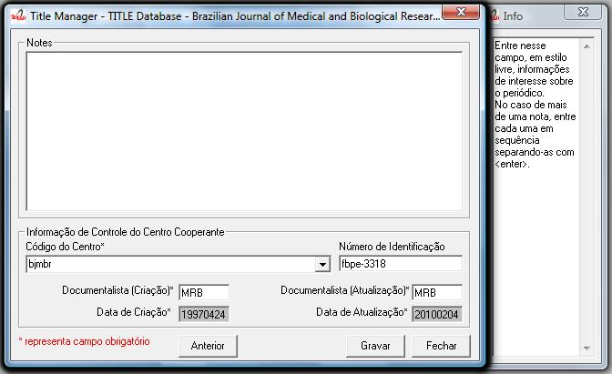Notes
.
Field: 900
Enter in this field, in free style, all information of interest to the Center about the serial.
Center Code
...¶
Field: 10
Code which identifies the center responsible for the creation of the bibliographic records
Identification Number
.
Field: 30
Sequential number assigned and controlled by the Cooperating Center which identifies the serial in the database. Enter in this field the number corresponding to the title being described. This field is used in the system in order to link the title record with its corresponding issues, therefore being mandatory. Examples:
- Record identification: 1050
- Record identification: 415
Creation Date
.
Field: 940
Automatically filled with the date of the registration.
Documentalist (Creation)¶
Field: 950
Initials of the responsible for the register creation.
Update Date
...¶
Field: 941
Automatically filled with the updating date.
Documentalist (Updat
...
Field: 951
Initials of the responsible for the register updating.